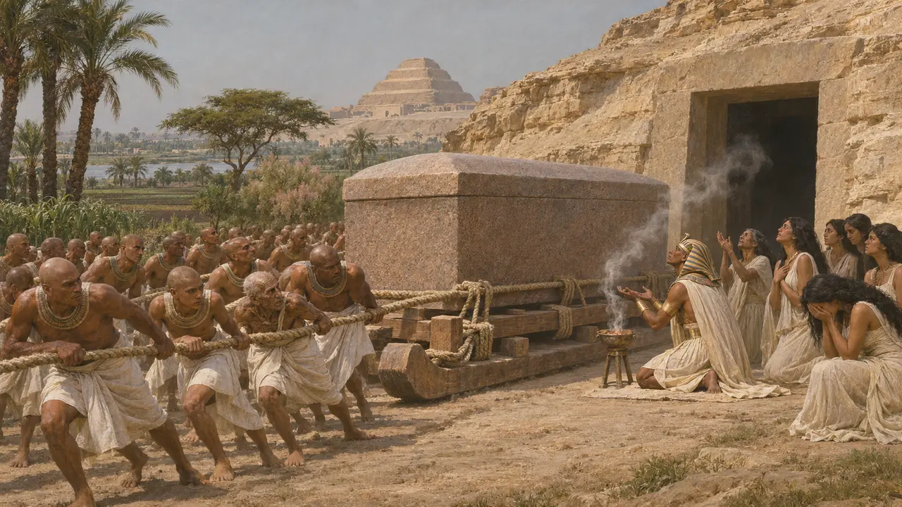
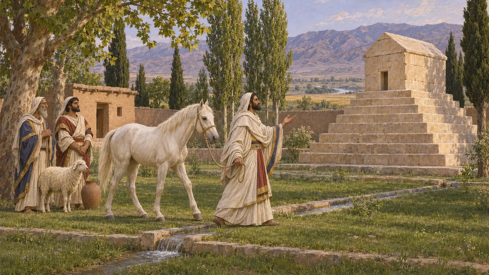
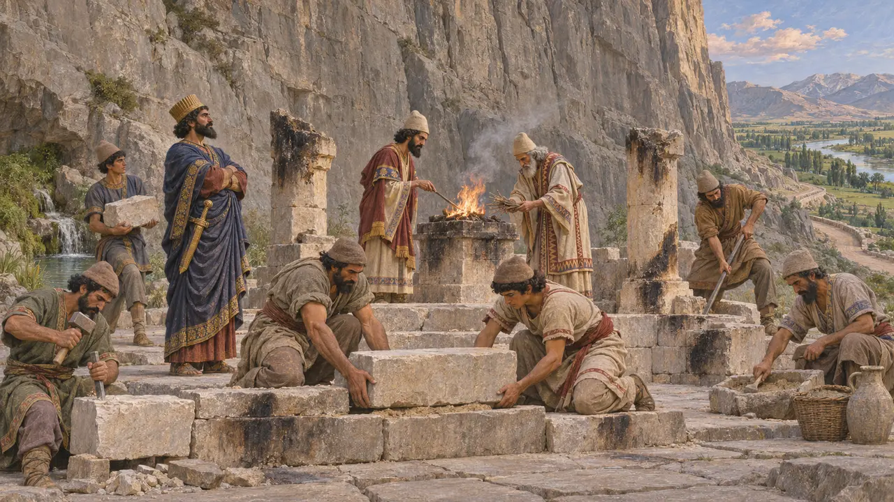

Enzyklopädie › Götter und Feste
Aussetzung und Bestattung
Vögel, Hunde und Wachs
Herodot sagt, die Magier überließen ihre Toten vor der Bestattung Vögeln und Hunden, und andere Perser überzögen den Leichnam mit Wachs und begrüben ihn. Könige hatten Gräber. Die Türme des Schweigens sind viel später.
Im Spiel: Die Begräbnisstätte nimmt die Toten der Stadt auf, und unbestattete Tote machen die in ihrer Nähe krank.

Was man Herodot erzählte
Antiker BerichtEr sagt, es sei ihm als Geheimnis erzählt worden und er sei nicht sicher, außer bei den Magiern, die es offen tun. Die Leichen werden von einem Vogel oder Hund zerrissen, bevor Wachs und Erde kommen.
Herodotus 1.140

Die Gräber der Könige
Zeitgenössisch belegtKyros lag auf einem goldenen Lager in einer Steinkammer in Pasargadai. Dareios und seine Erben schlugen ihre Gräber in die Felswand von Naqsch-e Rostam. Keines davon ist Aussetzung, und beide waren gegen die Erde versiegelt.
Arrian, Anabasis 6.29; Naqsh-e Rostam

Türme des Schweigens
UmstrittenDie Türme, die man aus späterem zoroastrischem Brauch kennt, haben kein gesichertes achämenidisches Beispiel. Über Felsnischen und Ossuarien zweifelhaften Datums wird gestritten.
Boyce 1982; Briant 2002
Quellen
- Herodotus 1.140
- Boyce 1982